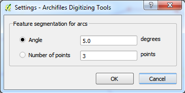
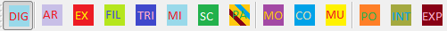

QGIS - User Documentation - Digitizing Tools
Version: 0.3
Date: 21/07/2014
Author: Guilhem Vellut
Source Code
The source code is on Github : https://github.com/gvellut/GVDigitizingTools
Installation
This plugin can be activated by selecting the “GV Digitizing Tools” entry in the plugin manager.
Usage
The plugin installs the following UI element:
- A “Settings” entry under the “Plugins” > “GV Digitizing Tools” menu
- A toolbar name “GV Digitizing Tools”
Settings
When clicked, the “Digitizing Tools - Settings” dialog opens.

The only option that can be set is related to how the segmentation for arcs into line segments in the “Draw Arc” and “Fillet” tools will be performed:
- By segmenting the arc according to an angle
- By a number of points in the arc (independent of the size of the arc)
“Digitizing Tools” toolbar

Most of the tools in the toolbar are only active when the currently active layer in the TOC is a vector layer of type Line that is currently editable. The only exceptions are the “Digitizing Setup” and “Move from multiple layers” tool, which are always active.
The available tools are as follows (from left to right in the screenshot above):
- “Digitizing Setup” mode. When active, some options useful for digitizing are activated: Topological editing, disabling of attribute dialog after creation. It also takes care of intercepting mouse events on behalf of the currently active tools, which is necessary for constraints (like in the “Parallel” mode), as well as intercepting keyboard events and of setting snapping options [because of some issues, those latter two are not active in the current version].
- “Draw Arc” tool (shortcut: Alt+Ctrl+S). This tool is for drawing arcs. It needs 2 inputs: A segment (which needs to preexist) and a node through which the arc will pass through. The tool replaces the segment with the arc inside the geometry the segment used to belong to. It uses the “Angle” setting for segmenting the arc into a polyline.
- “Extend” tool (shortcut: Alt+Ctrl+E). This tool is for extending a segment until it touches another one (the boundary edge). It needs 2 inputs: The boundary edge (which needs to preexist) and the segment to extend (which needs to preexist as well). To indicate which of the extremities needs to be extended, the user must select one side or the other of the segment to extend. The segment will then be extended until it intersects the boundary edge (if possible). As an alternative to selecting a specific segment for the boundary edge, the tool can use currently selected features or the whole layer. In that case, if there are multiple candidates for the boundary edge, the one that results in the shortest extension will be chosen. Multiple segments can be selected for extension and the tool stays active until the “Done” button is clicked or a right mouse click on the canvas.
- “Fillet” tool (shortcut: Alt+Ctrl+F). This tool is for creating a fillet at a corner between 2 segments. It needs 3 inputs: 2 segments (which need to preexist) and a fillet radius. The segments will be modified so that a they are joined with an arc of circle of the specified radius. If the radius is set to 0, the 2 segments are joined at their intersection.
- “Trim” tool (shortcut: Alt+Ctrl+C): This tool is for trimming a segment that crosses another one (the cutting edge). It needs 2 inputs: The cutting edge (which needs to preexist) and the segment to trim (which needs to preexist as well). The latter segment will be trimmed so one of its extremities lies on the cutting edge. To indicate which of the extremities needs to be trimmed, the user must select one side or the other of the intersection with the cutting edge. As an alternative to selecting a specific segment for the cutting edge, the tool can use currently selected features or the whole layer. In that case, if there are multiple candidates for the cutting edge (because of multiple intersections with the segment to trim), the one closest to the point clicked for choosing the segment to trim will be chosen.. Multiple segments can be selected for trimming and the tool stays active until the “Done” button is clicked or a right mouse click on the canvas.
- “Mirror” tool (shortcut: Alt+Ctrl+W): This tool is for creating new geometries that mirror existing ones. It needs 2 inputs: The 2 points that define the axis relative to which geometries will be mirrored. The tool operates on the geometries selected using the base QGIS selection tool or the whole layer if none is currently selected (in which case there is a warning before the operation is performed).
- “Scale” tool (shortcut: Alt+Ctrl+Z): This tool scales existing geometries relative to a base point and using a scale factor. It needs 2 inputs: The base point and the scale factor. The tool operates on the geometries selected using the base QGIS selection tool or the whole layer if none is currently selected (in which case there is a warning before the operation is performed).
- “Parallel” mode (shortcut: Alt+Ctrl+P): This mode can be used in conjunction with the “Add Feature” tool in the Editing toolbar in order to constrain the next added point to lie on a line parallel to a chosen segment. To work, the “Digitizing Setup” mode must be active and at least one point must have been drawn using the “Add feature” tool. After activation of the “Parallel” mode, the user must first select the reference segment. Then, while the mode is still active, the next point will be constrained so that the line formed with the previous point is parallel to that segment.
- “Move” tool (shortcut: Alt+Ctrl+D): This tool moves existing geometries according to a displacement vector. It needs 2 inputs: The 2 points defining the displacement vector. The tool operates on the geometries selected using the base QGIS selection tool or the whole layer if none is currently selected (in which case there is a warning before the operation is performed).
- “Copy” tool (shortcut: Alt+Ctrl+X): This tool copies existing geometries according to a displacement vector. It needs 2 inputs: The 2 points defining the displacement vector. The tool operates on the geometries selected using the base QGIS selection tool or the whole layer if none is currently selected (in which case there is a warning before the operation is performed). The tool can perform multiple copies by selecting the second points of the displacement vector multiple times.
- “Move from multiple layers” tool (shortcut: Alt+Ctrl+Q): This tool moves existing geometries in the layers currently selected in the TOC according to a displacement vector. It needs 2 inputs: The 2 points defining the displacement vector. The tool operates on the geometries selected using the base QGIS selection tool. It does nothing to layers with no selected features.
- “Polygonize” command: This command first cleans up the geometries, removing degenerate segments and duplicate polylines and creating nodes at line intersections. It then creates polygons from a set of lines.. The current line layer must be a “_DIGIT” layer: The polygons will be created in the corresponding non-”_DIGIT” layer. The command operates on the geometries selected using the base QGIS selection tool or the whole layer if none is currently selected (in which case there is a warning before the operation is performed).
- “Intersect” command: This command creates points at intersections and on segments to which a vertex is snapped. It operates on the geometries selected using the base QGIS selection tool or the whole layer if none is currently selected (in which case there is a warning before the operation is performed).
- “Explode” command: This command explodes multipart geometries into multiple single parts, creating a new feature for each part. The original multipart feature is deleted. The command operates on the geometries selected using the base QGIS selection tool or the whole layer if none is currently selected (in which case there is a warning before the operation is performed).
All the tools request their input using the QGIS message bar at the top of the map canvas:
The message bar is also used for feedback (error, warning, success) during the execution of the tool.